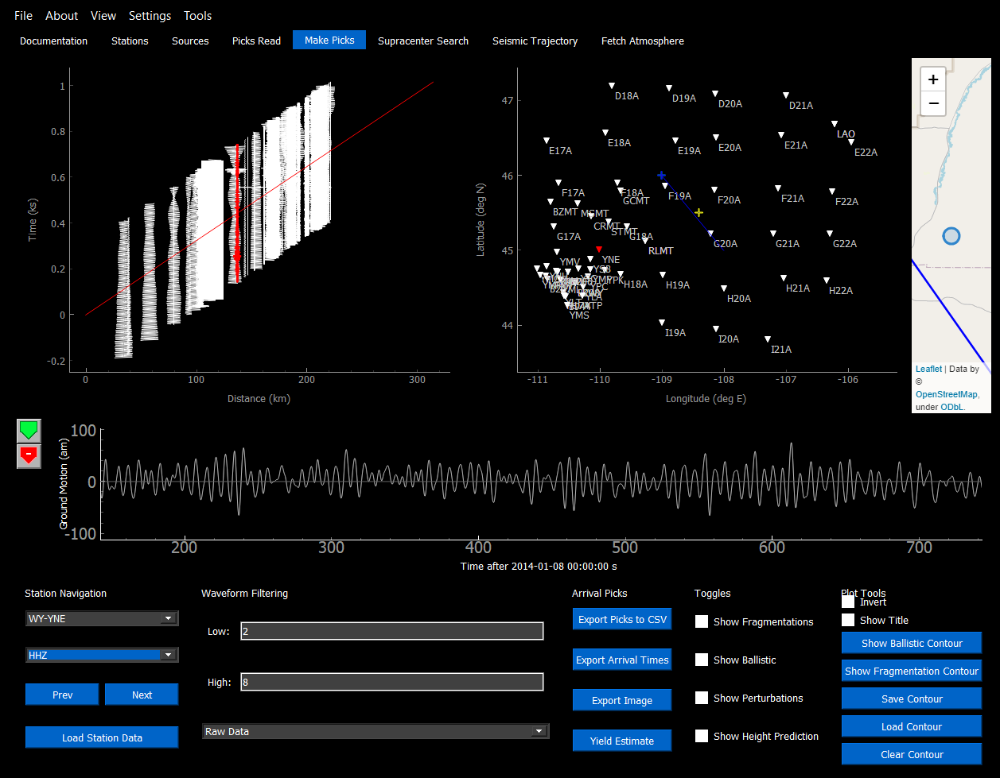
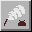
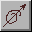
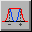
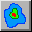
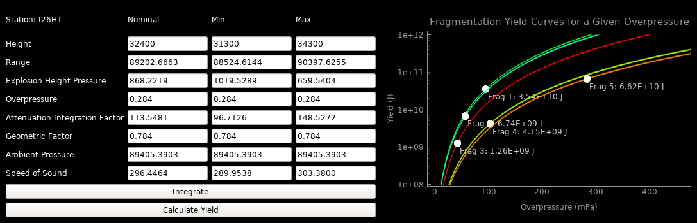

Make Picks¶
The make picks window allows the user to analyze the waveforms at each station. The intended purpose of this screen is to have the user identify where each pick is on the waveform and export the station picks file (.csv) for use in other parts of the program. This allows the user to search for fragmentation and ballistic solutions with the picks that they have created.
Usage¶
Once a .bam event file is created, including station and optional atmospheric files, navigate to the Make Picks tab and click “Load Station Data”. The program will begin calculating the arrival times to every station. For each station it will calculate (if the respective data is available and the switch is toggled on):
The arrival time of each fragmentation point given
The arrival time of the most likely ballistic wave
The perturbed arrivals of the above
The arrival times for an event will be saved, so that running the same event again will not recalculate the times. The times will only be recalculated for the following reasons:
The number of fragmentations change
Ballistic/fragmentation arrivals are toggled on/off
The number of perturbations change
The number of stations change
The recalculate times parameter is toggled on in the Preferences menu
Once the program is done calculating times, the GUI will change, and the waveforms can be freely navigated.
Shortcuts¶
Next Waveform: D
Previous Waveform: A
Bandpass Current Waveform: W
Spectrogram of Current Waveform: S
Convolution Filter of Current Waveform: C
Change Pick Group: UP/DOWN
Exporting Picks¶
Once all of the user picks have been made on the waveforms, the “Export CSV” button in the lower right corner may be clicked to output a .csv file. It is recommended that you place this .csv file in your working directory to easily access it through other parts of the program. To further edit the station picks, the station picks file may be loaded into the Picks Viewer window to be fine-tuned.
These picks may be loaded into the Supracenter or Acoustic Trajectory modules of the program.
Sidebar Tools¶
Make Picks¶

Selecting the waveform at a specific spot with this tool enabled will create a pick where the user clicks. (This replaces the old method of CTRL-clicking which is no longer in the program)
Changing the group will also change the colour of this icon and the picks created under that groupd number, so that the user can make multiple groups of picks for later analysis.
Remove Picks¶
Selecting a pick while this tool is enabled will remove a pick from the waveform of any group.
Annote Waveform¶
Not yet implemented
Ground Motion Plot¶
Selecting a waveform with the ground motion button toggled on will open up the Particle Motion dialogue using the currently open station and channel. The window will automatically open up the three channels around the one that was selected, either in a ZNE form (vertical, north, and east), or Z12 form (3 linearly independant directions but not ZNE) and rotate it to ZNE (rotation needs verification). The user may then select the bandpass for the 3 waveforms, and then select the subsection of the waveform to plot.
Selecting “Mark” will propgegate waveforms from the station at the calculated azimuth (and 180 degrees from the azimuth) at discrete zenith angles up until the height specified in the window. The green line plotted on the map shows the optimal azimuth where the red dots show these individual ray-traces. It will also append the polarization of the waveform (with uncertainty, and timing) to a list of azimuths attatched to the Station object (but will not save after closing the window as of version Beta-2). This is intended to use with the Polarization Map tool.
Note
The timing used for the polarization saved to the waveform in the Polarization Map Tool is at the beginning of the selected region of interest.
Optimal Bandpass Tool¶
Selecting a waveform with this button toggled on will open up the Optimal Bandpass tool using the currently open station and channel. The user will use the green selection area to select the portion of the signal to be optimized for, and the red selection area to give a noise sample. The program will then find the low and high cut points of the bandpass which has the best ratio and difference between the signal and noise.
Polarization Map Tool¶
Selecting a waveform with this button toggled on will open up the Polarization Map tool using the currently saved azimuths and timings from the Ground Motion Plot window. The program will propegate rays from the station up to a height of 50 km using perturbations and the azimuths (with uncertainty) which were added to each station.
The height (and therefore time) for the trajectory can be moved with the slider, and only rays with that specific height and time (within a tolerance of 500 m and 2 seconds) will be shown. Ideally, as the height is slid from 50 km downward, these rays should propegate from near the station to the line that is the trajectory (marked with a white “+”).
Yield Estimater¶
A window which will estimate the yield of a fragmentation from the data provided from a given station. In order to use, select the required station from the Make Picks tab, and make sure that the correct waveform is shown, that will be analyzed. Click “Yield Estimater” to bring up the yield estimation window.
Fill in the nominal height of the burst that is to be estimated. If this is not known, use the “Show Height Prediction” or “Solve Heights” options on the waveform. The minimum and maximum heights can be estimated by the user looking at the graph produced by “Show Height Prediction”, and estimating what the upper and lower bounds on the possible explosions are.
After filling in the heights, the user can click “Integrate”, and the program will fill in as much information as it can for the other factors. The user must fill in the rest of each column being used for Calculate Yield to work. This part of the program may be used with either only the “Nominal” column, or all three columns.
Calculate yield will show the “blast curve” of the parameters entered. The point plotted on the curve represents the yield for the overpressure entered in.
Note
It is recommended to use large n_theta and n_phi values (>1000) since very precise release angles are required to find the geometric factor.